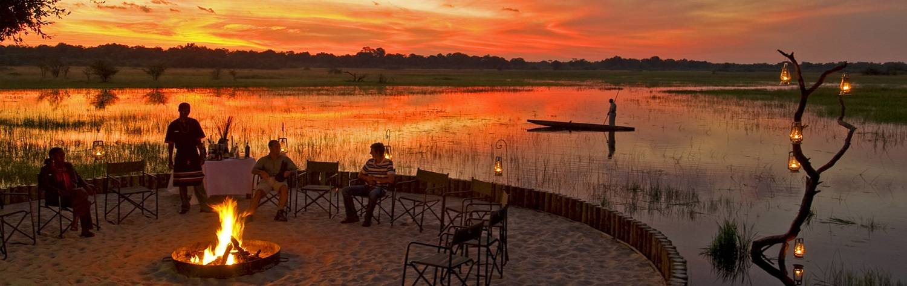

Botswana radiates scale and authenticity, its vast, untamed lands offering a
dreamt-up version of old world Africa. Road signs warn of crossing elephants,
rhinos maraud across isolated airstrips, and cacophonous hippo-honks accompany
every night spent sleeping near water. There are more national parks than major
roads, and traffic is genuinely halted by herds of 20 elephants crossing the main
highway. Botswana’s immense landscapes may seem fictional, yet they indelibly
become real before your eyes. This is an animal kingdom: untouched, unadulterated,
and unbelievable until you see it firsthand.
Botswana is a relatively unknown destination, one where instant superlatives
rarely sit comfortably. As Africa’s most stable democracy and the world’s largest
diamond producer, the country has been able to develop an exceptional safari
business – successfully combining high-end luxury with real off-the-beaten-track
experiences. Boutique lodges stand alone in thousands of square miles of pristine wilderness.
Huge swathes of the country may never have seen human eyes. Spotting lion prides
is part of the daily routine, and being on safari starts from the moment you enter
the country. Botswana is raw, rugged, and relentlessly remote. Reaching its parks
and camps often requires a short flight: a scenic journey of astonishing vistas
and prehistoric landscapes. There are no roads, no wifi, and no footprints; this
is a world where people are just visitors, and quarreling hippos fight before your eyes.
Let’s indulge a little and consider Botswana’s scale. The Okavango Delta encompasses
16,000 square kilometers at its flooded height, making it the largest inland water system
on the planet. Chobe National Park is home to the world’s largest concentration of
elephants: at least 50,000 of the giant pachyderms roam its great forests and grasslands.
At 52,800 square kilometers, the Central Kalahari Game Reserve is the world’s second
largest wildlife reserve, and its original inhabitants, the San Bushmen, are the oldest
human population in southern Africa – and arguably in the world.
Explore it all on foot or from a dugout canoe, then watch it all slowly approach from
your private balcony. The wild game comes so thick and fast that you end up exclaiming and
pointing whenever another person comes into view. Slowing the heart and calming the senses
is some of Africa’s finest accommodation: exclusive lodges and lavish tented camps that
effortlessly blend wild Africa with unmatched luxury. Botswana is the land of animals and
there are few places on the planet where you will feel more alive.
Botswana is renowned for its progressive conservation policies, with national parks
and game reserves making up about 38 percent of the country. Their ecosystems merge and
interact, forming huge swathes of untouched wilderness that define the Botswanan experience.
Here is a quick south-to-north journey through its most iconic destinations.
